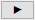

Dialog Einfache ANOVA
OneWayANOVA-Dialog
Dieser Dialog kann verwendet werden, um eine einfache ANOVA mit wiederholten Messungen durchzuführen. Um diesen Dialog zu öffnen, wählen Sie Statistik: ANOVA: Einfache ANOVA im Origin-Menü.
Hilfreiche Informationen
Neuberechnen
Eingabe
Setzen Sie die Auswahlliste auf Roh oder Indiziert.
| Indiziert |
Bei dieser Variante enthält eine Spalte die Stufen der Faktorvariable. Die entsprechenden Antwortdaten befinden sich in einer anderen Spalten. Faktor
- Legen Sie die Faktorspalte fest. Beachten Sie, dass die Faktorspalte als Kategorial gesetzt wird, wenn es sich um eine Textspalte handelt.
Daten
- Legen Sie die Spalte mit den Antwortdaten fest.
: Wenn Sie numerische anstatt Textwerte für den Faktor im Ergebnisdiagramm anzeigen möchten, setzen Sie bitte Die Spaltenzuordnung der Faktorspalte auf Gruppe.
|
| Roh |
Bei dieser Variante sind die Antwortdaten jeder Stufe der Faktorvariable in einer separaten Spalte gespeichert. Faktor
- Name
- Geben Sie den Faktornamen ein.
- Anzahl der Stufen
- Standard = 2
- Legen Sie die Anzahl der Stufen fest. Jede Stufe hat eigene Bedienelemente für Stufei. Beachten Sie, dass die Systemvariable @AML dazu verwendet werden kann, die max. Anzahl der unterstützten Stufen für ANOVA zu steuern, die standardmäßig 25 beträgt. Sie können die maximale Anzahl der Stufen ändern, indem Sie der @AML-Variablen neue Werte zuweisen.
- Stufei Name
- Standard = Faktor i Stufei
- Legen Sie den Stufennamen fest. Automatisch verwendet den Langnamen des Blatts.
Daten
- Stufei
- Legen Sie die Datenspalte für jede Stufe fest. Verwenden Sie die Bedienelemente der Datenauswahl neben jeder Stufe
 oder klicken Sie auf die Schaltfläche Navigieren rechts von Daten und oder klicken Sie auf die Schaltfläche Navigieren rechts von Daten und  und wählen Sie Aus Arbeitsblatt auswählen, um über Point-and-Click Arbeitsblattspalten auszuwählen, oder Spalten auswählen, um den Spaltenbrowser zu öffnen.
|
Deskriptive Statistik
Aktivieren Sie diese Option, um Ergebnisse der deskriptiven Statistik im Ausgabebericht zu berücksichtigen.
Effektgröße
Legen Sie fest, ob die Tabelle der Effektgröße im Berichtsblatt ausgegeben wird. In der Berichtstabelle werden die Kennzahlen der Effektgröße für die einfache ANOVA ausgegeben: Eta-Quadrat, Cohens f und Omega-Quadrat. Sie sind alle Statistiken der standardisierten Effektgröße, die bei der ANOVA verwendet werden, um den Betrag der Gruppendifferenzen zu quantifizieren.
Eta-Quadrat und Omega-Quadrat sind durch Varianz erklärte Kennzahlen, während Cohens f eine Kennzahl für die standardisierte Mittelwertdifferenz ist.
Signifikanzniveau
Legen Sie das Signifikanzniveau der einfachen ANOVA fest.
Angenommene gleiche Varianz
Diese Option ist standardmäßig aktiviert. Sie hat Auswirkungen auf die Methoden, die auf der Registerkarte Mittelwertevergleich verfügbar sind.
Während eine Standard-ANOVA annimmt, dass alle Vergleichsgruppen eine gleiche Varianz haben, ist die ANOVA nach Welch eine Alternative zur einfachen Standard-ANOVA, für Situationen, in denen die Annahme der Homogenität der Varianzen nicht erfüllt ist. Es nutzt gewichtete Gruppenvarianzen zur Anpassung der Freiheitsgrade, wodurch die Typ-I-Fehlerrate stabil bleibt, selbst wenn sich die Varianzen und Stichprobenumfänge zwischen den Gruppen signifikant unterscheiden.
- Wenn diese Option ausgewählt ist, wird die Berichtstabelle ANOVA gesamt ausgegeben. Sie stellt zudem die Mittelwertevergleichsmethoden Tukey, Dunnett, Bonferroni, Dunn-Sidak, Fishers LSD, Scheffe, Holm-Bonferroni und Holm-Sidak zur Verfügung.
- Wenn diese Option deaktiviert ist, wird die Berichtstabelle Welch-Test ausgegeben. Die Mittelwertevergleichsmethode Games-Howell ist verfügbar. Außerdem basiert der p-Wert für das Zusammenfassungsdiagramm des Ergebnisblatts auf dem p der ANOVA nach Welch und die Vergleichsintervalle des Mittelwerts basieren auf der Games-Howell-Methode.
Mittelwertevergleich
Wählen Sie Methoden für den paarweisen Mittelwertevergleich im Nachhinein:
| Signifikanzniveau |
Legen Sie das Signifikanzniveau des paarweisen Mittelwertevergleichs fest. |
| Vergleichen |
- Vergleichen Sie jede Gruppe mit allen anderen Gruppen.
- Jeder Mittelwert mit einem Kontrollwert
- Wählt eine spezifische Gruppe als Referenzstandard (Kontrollstufe), und vergleicht alle anderen Gruppen strikt gegen diese spezifische Gruppe. Die nicht festgelegten Gruppen werden nicht mit einer anderen verglichen.
|
| Kontrollstufe |
Legen Sie die Kontrollstufe für den Mittelwertevergleich fest. Diese Option ist verfügbar, wenn Jeder Mittelwert mit einem Kontrollwert unter Vergleichen ausgewählt ist. Es gibt zum Beispiel drei Stufen (Gruppen) A, B und C in der Stichprobe. Durch Festlegen der Kontrollstufe auf A, werden B und C jeweils mit A verglichen, aber B und C werden nicht miteinander verglichen.
|
| Tukey |
Verschiedene Methoden für den Mittelwertevergleich. Wenn Angenommene gleiche Varianz auf der Registerkarte Eingabe ausgewählt ist, werden diese Methoden für den paarweisen Mittelwertevergleich zur Verfügung gestellt. Falls Alle Mittelwertpaare unter Vergleichen ausgewählt ist, wird die Tukey-Methode zur Verfügung gestellt. Falls Jeder Mittelwert mit einem Kontrollwert unter Vergleichen ausgewählt ist, wird die Dunnett-Methode zur Verfügung gestellt. Weitere Methoden sind bei beiden Optionen verfügbar. (Weitere Informationen finden Sie unter Algorithmen.)
|
| Dunnett |
| Bonferroni |
| Dunn-Sidak |
| Fishers LSD |
| Scheffé |
| Holm-Bonferroni |
| Holm-Sidak |
| Games-Howell |
Wenn Angenommene gleiche Varianz auf der Registerkarte Eingabe deaktiviert ist, wird die Game-Howell-Methode für den paarweisen Mittelwertevergleich zur Verfügung gestellt. (Weitere Informationen finden Sie unter Algorithmen.)
|
| Tabelle der Gruppenbuchstaben |
Die Differenz des Mittelwerts wird mit Buchstaben gezeigt. Der gleiche Buchstabe bedeutet, dass keine signifikante Differenz besteht. Ein unterschiedlicher Buchstabe bedeutet, dass es eine signifikante Differenz zwischen den zwei Gruppen gibt. |
Test auf gleiche Varianz
Wählen Sie Testmethoden zum Testen der Homogenität der Varianz.
| Signifikanzniveau |
Legen Sie das Signifikanzniveau für den Test auf gleiche Varianz fest. |
| Levene | | |
Unterschiedliche Methoden für den Test auf gleiche Varianz (Weitere Informationen finden Sie unter Algorithmen.)
|
| Levene ()^2 |
| Brown-Forsythe |
Analyse der Trennschärfe
Wählen Sie diese Option, um die Trennschärfeanalyse durchzuführen:
Relevante Mindestdifferenz aufheben
| Differenz(en) für festgelegte Trennschärfe |
Wenn die Relevante Mindestdifferenz nicht festgelegt ist, ist diese Option verfügbar. Die Differenzen für die festlegten Trennschärfen werden ausgegeben. Wenn diese Option ausgewählt ist, beeinflusst die festgelegte Trennschärfeeinstellung die Trennschärfe in der Trennschärfekurve.
|
| Trennschärfe(n) |
Wenn die Option Differenz(en) für festgelegte Trennschärfe aktiviert ist, können Sie in dieses Bearbeitungsfeld die Trennschärfewerte, getrennt durch ein Leerzeichen, eingeben. Standardtrennschärfewerte sind 60 %, 70 %, 80 % und 90 %. |
Relevante Mindestdifferenz festlegen
| Relevante Mindestdifferenz |
Legen Sie die Mindestdifferenz fest, für die Sie sich interessieren. Sobald Sie einen Wert in dieses Feld eingeben, zeigt das Diagramm der Trennschärfeanalyse den Mindeststichprobenumfang, um diese Differenz in verschiedenen Trennschärfen zu entdecken. |
| Stichprobenumfang/-umfänge für festgelegte Trennschärfe |
Wenn die Option Relevante Mindestdifferenz festgelegt ist, wird diese Option verfügbar. Geben Sie die Stichprobenumfänge für die festlegten Trennschärfen aus. Wenn diese Option ausgewählt ist, beeinflusst die festgelegte Trennschärfeeinstellung die Trennschärfe in der Trennschärfekurve. Wenn die Option aktiviert ist, wird der Standardwert der Trennschärfe verwendet.
|
| Trennschärfe(n) |
Wenn die Option Stichprobenumfang/-umfänge für festgelegte Trennschärfe aktiviert ist, können Sie in dieses Bearbeitungsfeld die Zieltrennschärfewerte, getrennt durch ein Leerzeichen, eingeben. Standardtrennschärfewerte sind 60 %, 70 %, 80 % und 90 %. |
| Trennschärfe basierend auf Testdaten |
Wenn die Option Relevante Mindestdifferenz festgelegt ist, wird diese Option verfügbar. Berechnen Sie die Trennschärfe für den Stichprobenumfang der Testdaten. (Wahrscheinlichkeit, die Nullhypothese zurückzuweisen, wenn diese falsch ist)
|
| Hypothetische Trennschärfe |
Wenn die Option Relevante Mindestdifferenz festgelegt ist, wird diese Option verfügbar. Berechnen Sie die Trennschärfe des Tests für verschiedene Stichprobenumfänge. Wenn diese Option aktiviert ist, wird die entsprechende Kurve zur Trennschärfekurve hinzugefügt.
|
| Hypothetische/r Stichprobenumfang/-umfänge |
Wenn Relevante Mindestdifferenz und Hypothetische Trennschärfe aktiviert ist, wird diese Option verfügbar. Legen Sie den/die hypothetischen Stichprobenumfang/-umfänge für die Berechnung der Trennschärfe fest.
|
Ausgabe
| Grafischer Zusammenfassungsbericht |
Legen Sie fest, ob der grafische Zusammenfassungsbericht angezeigt werden soll. |
| Mittelwertvergleichsmethode, die im Bericht verwendet wurde |
Wenn Grafischer Zusammenfassungsbericht und Angenommene gleiche Varianz (auf der Registerkarte Eingabe) aktiviert ist, ist diese Option verfügbar. Wählen Sie die Methode für die Vergleichsintervalle der Mittelwerte aus.- Tukey / Dunnett
- Bonferroni
- Dunn-Sidak
- Fisher LSD
- Scheffé
Wenn der grafische Zusammenfassungsbericht aktiviert ist, wird diese Option nicht gezeigt. Die Methode für die Vergleichsintervalle der Mittelwerte ist Games-Howell.
|
| Grafischer Diagnosebericht |
Legen Sie fest, ob der Diagnosebericht angezeigt werden soll. Wenn der grafische Zusammenfassungsbericht angezeigt wird, wird er beim Diagrammknoten nach dem Zusammenfassungsbericht gezeigt. Falls der grafische Zusammenfassungsbericht nicht angezeigt wird, wird er beim ersten Diagrammknoten gezeigt. Der Stichprobenumfang hat Auswirkungen auf den Diagrammtyp der Datenverteilung im linken Bedienfeld.
- Wenn die Stichprobe eines Faktors >= 30, werden Histogramm + Intervalldiagramme gezeigt.
- Wenn die Stichprobe eines Faktors < 30, werden Punkt- + Intervalldiagramme gezeigt.
- Wenn die Anzahl der Faktoren > 6, werden nur Histogramm oder Punktdiagramme gezeigt, die Intervalldiagramme werden verborgen.
|
| Grafischer Bericht der Trennschärfeanalyse |
Legen Sie fest, ob der grafische Bericht der Trennschärfeanalyse angezeigt werden soll. Die Trennschärfekurve zeigt, wie die statistische Trennschärfe des Tests sich ändert, wenn die Differenz zwischen den Anteilen wechselt. Die Trennschärfe ist die Wahrscheinlichkeit, dass die Nullhypothese verworfen wird, wenn die wahre Differenz sich von 0 unterscheidet. |
| Diagrammanordnung |
Diagramme in Spalten anordnen
- Legen Sie die Anzahl der Spalten fest, in denen die Ausgabediagramme angeordnet werden.
Diagramme des gleichen Typs in einem Graph anordnen
- Aktivieren Sie das Hinzufügen aller Datenzeichnungen desselben Typs in einem Diagrammfenster.
|
| Berichtstabellen |
Legen Sie das Ziel für die Berichtstabellen fest. Mappe
- Legt die Zielarbeitsmappe fest. Das nebenstehende Feld Mappenname enthält den Mappenname der Ausgabe.
- <Keine>: Es werden keine Berichtstabellen ausgegeben. (Das Feld Mappenname ist leer und nur lesbar).
- <Auto>: Der Ort der anfänglichen Auswahl der Eingabedaten (Beachten Sie, dass die Eingabedatenbereiche aus unterschiedlichen Arbeitsmappen stammen können.) Wenn sich Eingabedaten nicht in einer Origin-Arbeitsmappe befinden, wird Origin automatisch eine passende Origin-Arbeitsmappe auswählen (normalerweise wird eine neue Arbeitsmappe erstellt).
- <Quelle>: Die Quelldatenarbeitsmappe
- <neu>: Eine neue Arbeitsmappe
- <existiert>: Eine festgelegte existierende Arbeitsmappe
Blatt
- Das Zielarbeitsblatt (immer <neu> und benannt mit BlattName).
Ergebnisfenster
- Mit diesem Kontrollkästchen wird festgelegt, ob der Bericht im Ergebnisfenster ausgegeben wird.
Skriptfenster
- Mit diesem Kontrollkästchen wird festgelegt, ob der Bericht im Skriptfenster ausgegeben wird.
Notizfenster
- Verwenden Sie diese Auswahlliste, um das Ziel des Notizfensters festzulegen:
- <Keine>: Nicht in Notizfenstern ausgeben
- <neu>: In ein neues Notizfenster ausgeben Sie können den gewünschten Namen des Notizfensters hier eingeben.
|
| Zeichnungsdaten |
Legen Sie das Ziel fest, um die Daten für Zeichnungen auszugeben (Sie müssen eine Option unten unter Diagramme auswählen). Mappe
- Legen Sie die Arbeitsmappe fest, in der die gezeichneten Daten ausgegeben werden sollen.
- <Auto>: Befolgt die Einstellungen der Berichtstabellen, es sei denn Mappe = <Keine>.
- <Quelle>: Die Quelldatenarbeitsmappe
- <Bericht>: Die Arbeitsmappe, die den Bericht enthält
- <neu>: Eine neue Arbeitsmappe
- <existiert>: Eine festgelegte existierende Arbeitsmappe
Blatt
- Das Zielarbeitsblatt (immer <neu> und benannt mit BlattName).
|
| Optionale Berichtstabellen |
Legen Sie fest, ob zusätzliche Tabellen in das Berichtsblatt eingefügt werden sollen. Hinweise
- Notiztabelle
Eingabedaten
- Tabelle für Eingabedaten
Maskierte Daten
- Tabelle für maskierte Daten
Fehlende Daten
- Tabelle für fehlende Daten
|
Diagramme
| Balkendiagramm |
Legen Sie fest, ob das Diagramm im Berichtsblatt erzeugt werden soll. Hinweis: Wenn die Spalte Faktor auf Kategorisch gesetzt ist, wird das ausgegebene Diagramm entsprechend der kategorialen Ordnung gezeichnet, die auf der Registerkarte Kategorien (Spalteneigenschaften) basierend auf der Spalte Faktor gezeichnet.
|
| Boxdiagramm |
| Mittelwertdiagramm (StAbw als Fehler) |
| Mittelwertdiagramm (SE als Fehler) |
| Mittelwertvergleichsdiagramm |
Diese Option ist nur verfügbar, wenn paarweise Vergleiche im Nachhinein durchgeführt werden (gesteuert im Zweig Mittelwertevergleich). Legen Sie fest, ob die Diagramme des Mittelwertevergleichs für alle ausgewählten Methoden ausgegeben werden sollen.
|
| Residuendiagramm |
Das Residuendiagramm wird verwendet, um zu prüfen, ob die Annahmen für die Varianzanalyse erfüllt sind. Das bedeutet, dass geprüft wird, ob die Residuen normalverteilt sind und eine konstante Varianz haben. Hier zeigt Origin vier Diagrammtypen:- Zeilenordnung
- Histogramm
- Angepasstes Y
- Wahrscheinlichkeit mit Normalverteilung
|